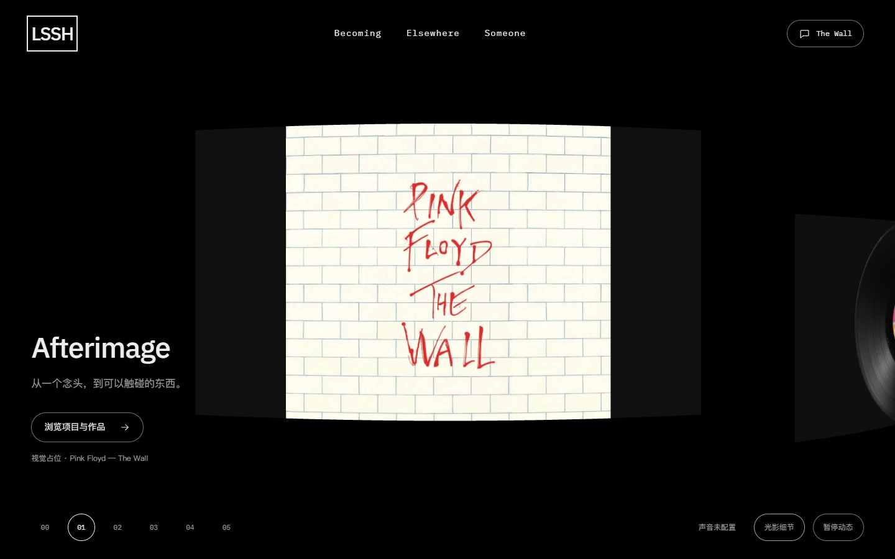
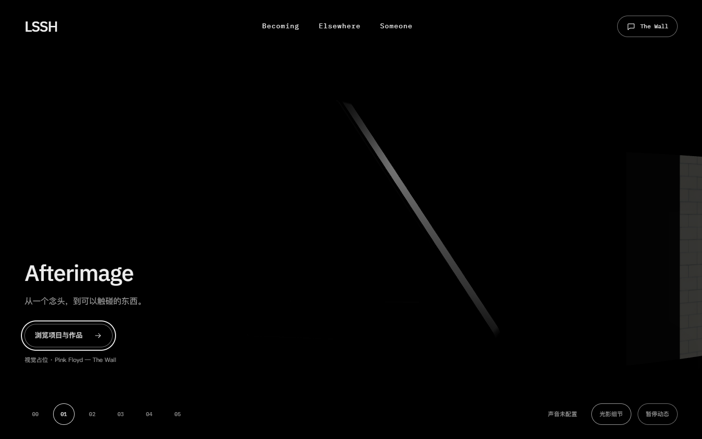

第22轮：文案可见与入口可用同步
只修序章身份退出和首卡 CTA 门禁。桌面 1440×900、手机模拟 390×844；Chrome / SwiftShader。截图按实际滚动点对照，前后不作毫秒级运动对齐。
身份层交接
修复前 修复后
修复后
首卡 CTA：延迟期间保持关闭
从实际项目激活时刻采每个浏览器 RAF。下表显示全部 0–300ms 读取与后续首次开放帧；检查按钮自身透明度、祖先透明度、原生 inert、命中和焦点。
验证结果
首卡停驻
栏目返回首帧：DOM 已显示和聚焦，GL 卡片仍追赶
玻璃反射、相机 sigmoid、四卡组合和全屏升墙留在各自切片。本片工程与设计复核通过，用户确认另记。